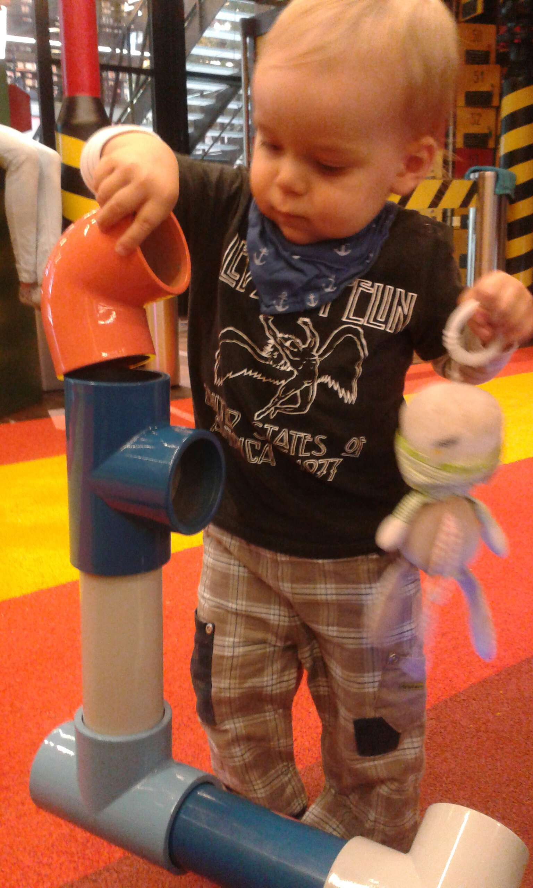

<?xml version="1.0" encoding="UTF-8"?><rss version="2.0"
	xmlns:content="http://purl.org/rss/1.0/modules/content/"
	xmlns:wfw="http://wellformedweb.org/CommentAPI/"
	xmlns:dc="http://purl.org/dc/elements/1.1/"
	xmlns:atom="http://www.w3.org/2005/Atom"
	xmlns:sy="http://purl.org/rss/1.0/modules/syndication/"
	xmlns:slash="http://purl.org/rss/1.0/modules/slash/"
	>

<channel>
	<title>The Clouet Studzińska &#187; Anna Studzińska</title>
	<atom:link href="http://blog.clouet-studzinska.com/?feed=rss2&#038;author=2" rel="self" type="application/rss+xml" />
	<link>http://blog.clouet-studzinska.com</link>
	<description>Najładniejsze Gremliny</description>
	<lastBuildDate>Mon, 15 Oct 2018 06:10:39 +0000</lastBuildDate>
	<language>en-US</language>
	<sy:updatePeriod>hourly</sy:updatePeriod>
	<sy:updateFrequency>1</sy:updateFrequency>
	<generator>http://wordpress.org/?v=4.1</generator>
	<item>
		<title>Piotr found a stick</title>
		<link>http://blog.clouet-studzinska.com/?p=571</link>
		<comments>http://blog.clouet-studzinska.com/?p=571#comments</comments>
		<pubDate>Tue, 21 Feb 2017 23:13:20 +0000</pubDate>
		<dc:creator><![CDATA[Anna Studzińska]]></dc:creator>
				<category><![CDATA[Uncategorized]]></category>

		<guid isPermaLink="false">http://blog.piotrus.fr/?p=571</guid>
		<description><![CDATA[Which made him extremely happy. Now the stick lives on our balcony. He also made a carnival mask with his nanny and he&#8217;ll wear it to his music class this Saturday.]]></description>
				<content:encoded><![CDATA[<p>Which made him extremely happy. Now the stick lives on our balcony.</p>
<p>He also made a carnival mask with his nanny and he&#8217;ll wear it to his music class this Saturday.</p>
<p><a href="wp-content/uploads/2017/02/wpid-wp-image-1383503980jpg.jpg"></a></p>
<p><a href="wp-content/uploads/2017/02/wpid-wp-image-581186085jpg.jpg"></a></p>
]]></content:encoded>
			<wfw:commentRss>http://blog.clouet-studzinska.com/?feed=rss2&#038;p=571</wfw:commentRss>
		<slash:comments>1</slash:comments>
		</item>
		<item>
		<title>Cookin&#8217;</title>
		<link>http://blog.clouet-studzinska.com/?p=548</link>
		<comments>http://blog.clouet-studzinska.com/?p=548#comments</comments>
		<pubDate>Mon, 04 Apr 2016 18:37:10 +0000</pubDate>
		<dc:creator><![CDATA[Anna Studzińska]]></dc:creator>
				<category><![CDATA[Uncategorized]]></category>

		<guid isPermaLink="false">http://blog.piotrus.fr/?p=548</guid>
		<description><![CDATA[]]></description>
				<content:encoded><![CDATA[<p><a href="wp-content/uploads/2016/04/wpid-20160404_183147.jpg"></a></p>
<p><a href="wp-content/uploads/2016/04/wpid-20160404_183139.jpg"></a></p>
<p><a href="wp-content/uploads/2016/04/wpid-20160404_180203.jpg"></a></p>
]]></content:encoded>
			<wfw:commentRss>http://blog.clouet-studzinska.com/?feed=rss2&#038;p=548</wfw:commentRss>
		<slash:comments>0</slash:comments>
		</item>
		<item>
		<title>Supersize my hands</title>
		<link>http://blog.clouet-studzinska.com/?p=540</link>
		<comments>http://blog.clouet-studzinska.com/?p=540#comments</comments>
		<pubDate>Fri, 18 Mar 2016 14:56:46 +0000</pubDate>
		<dc:creator><![CDATA[Anna Studzińska]]></dc:creator>
				<category><![CDATA[Uncategorized]]></category>

		<guid isPermaLink="false">http://blog.piotrus.fr/?p=540</guid>
		<description><![CDATA[Winters in Poland can be cold. This is what happens when you refuse to wear your own gloves. (we managed to get him some baby gloves that he accepts but this was our temporary solution)]]></description>
				<content:encoded><![CDATA[<p><a href="wp-content/uploads/2016/03/wpid-20160313_101954.jpg"></a></p>
<p><a href="wp-content/uploads/2016/03/wpid-20160313_101942.jpg"></a></p>
<p>Winters in Poland can be cold. This is what happens when you refuse to wear your own gloves.</p>
<p>(we managed to get him some baby gloves that he accepts but this was our temporary solution)</p>
]]></content:encoded>
			<wfw:commentRss>http://blog.clouet-studzinska.com/?feed=rss2&#038;p=540</wfw:commentRss>
		<slash:comments>0</slash:comments>
		</item>
		<item>
		<title>Fashionista</title>
		<link>http://blog.clouet-studzinska.com/?p=536</link>
		<comments>http://blog.clouet-studzinska.com/?p=536#comments</comments>
		<pubDate>Tue, 01 Mar 2016 23:53:06 +0000</pubDate>
		<dc:creator><![CDATA[Anna Studzińska]]></dc:creator>
				<category><![CDATA[Uncategorized]]></category>

		<guid isPermaLink="false">http://blog.piotrus.fr/?p=536</guid>
		<description><![CDATA[Rocking my boots His own sunglasses And my uggs. He looooves my uggs. Wears them every few days.]]></description>
				<content:encoded><![CDATA[<p><a href="wp-content/uploads/2016/03/wpid-20160126_085852.jpg"></a></p>
<p>Rocking my boots</p>
<p><a href="wp-content/uploads/2016/03/wpid-20160208_190051.jpg"></a></p>
<p><a href="wp-content/uploads/2016/03/wpid-20160208_190019.jpg"></a></p>
<p>His own sunglasses</p>
<p><a href="wp-content/uploads/2016/03/wpid-20160209_184729.jpg"></a></p>
<p><a href="wp-content/uploads/2016/03/wpid-20160209_184653.jpg"></a></p>
<p>And my uggs. He looooves my uggs. Wears them every few days.</p>
]]></content:encoded>
			<wfw:commentRss>http://blog.clouet-studzinska.com/?feed=rss2&#038;p=536</wfw:commentRss>
		<slash:comments>0</slash:comments>
		</item>
		<item>
		<title>In the kitchen</title>
		<link>http://blog.clouet-studzinska.com/?p=529</link>
		<comments>http://blog.clouet-studzinska.com/?p=529#comments</comments>
		<pubDate>Wed, 17 Feb 2016 18:59:47 +0000</pubDate>
		<dc:creator><![CDATA[Anna Studzińska]]></dc:creator>
				<category><![CDATA[Uncategorized]]></category>

		<guid isPermaLink="false">http://blog.piotrus.fr/?p=529</guid>
		<description><![CDATA[Piotr is getting ready for his trip to Poland where he&#8217;ll be making pierogi with his grandgrandma.]]></description>
				<content:encoded><![CDATA[<p><a href="wp-content/uploads/2016/02/wpid-20160216_181424.jpg"></a></p>
<p><a href="wp-content/uploads/2016/02/wpid-20160216_180557.jpg"></a></p>
<p>Piotr is getting ready for his trip to Poland where he&#8217;ll be making pierogi with his grandgrandma.</p>
]]></content:encoded>
			<wfw:commentRss>http://blog.clouet-studzinska.com/?feed=rss2&#038;p=529</wfw:commentRss>
		<slash:comments>0</slash:comments>
		</item>
		<item>
		<title>The boys are baking</title>
		<link>http://blog.clouet-studzinska.com/?p=525</link>
		<comments>http://blog.clouet-studzinska.com/?p=525#comments</comments>
		<pubDate>Sun, 14 Feb 2016 16:59:32 +0000</pubDate>
		<dc:creator><![CDATA[Anna Studzińska]]></dc:creator>
				<category><![CDATA[Uncategorized]]></category>

		<guid isPermaLink="false">http://blog.piotrus.fr/?p=525</guid>
		<description><![CDATA[Laurent is baking &#8220;liquid heart chocolate muffins&#8221; for Valentine&#8217;s day and Piotr helping him lots!]]></description>
				<content:encoded><![CDATA[<p><a href="wp-content/uploads/2016/02/wpid-20160214_174334.jpg"></a></p>
<p><a href="wp-content/uploads/2016/02/wpid-20160214_174338.jpg"></a></p>
<p><a href="wp-content/uploads/2016/02/wpid-20160214_174402.jpg"></a></p>
<p><a href="wp-content/uploads/2016/02/wpid-20160214_174412.jpg"></a></p>
<p>Laurent is baking &#8220;liquid heart chocolate muffins&#8221; for Valentine&#8217;s day and Piotr helping him lots!</p>
]]></content:encoded>
			<wfw:commentRss>http://blog.clouet-studzinska.com/?feed=rss2&#038;p=525</wfw:commentRss>
		<slash:comments>0</slash:comments>
		</item>
		<item>
		<title>Christmas list</title>
		<link>http://blog.clouet-studzinska.com/?p=495</link>
		<comments>http://blog.clouet-studzinska.com/?p=495#comments</comments>
		<pubDate>Thu, 03 Dec 2015 21:56:50 +0000</pubDate>
		<dc:creator><![CDATA[Anna Studzińska]]></dc:creator>
				<category><![CDATA[Uncategorized]]></category>

		<guid isPermaLink="false">http://blog.piotrus.fr/?p=495</guid>
		<description><![CDATA[Here is a special Christmas list for Piotr http://www.myregistry.com/public/piotr-clouet-2nd-christmas [it&#8217;s a mix of Polish and French stores, so don&#8217;t be discouraged] (he actually made a list &#8211; he glued pictures on a piece of paper &#8211; I&#8217;ll try to post it later) Other than that he&#8217;ll appreciate clothes size 86+ cm (18 months/2 years; depending &#8230; <a href="http://blog.clouet-studzinska.com/?p=495" class="more-link">Continue reading <span class="screen-reader-text">Christmas list</span></a>]]></description>
				<content:encoded><![CDATA[<p>Here is a special Christmas list for Piotr</p>
<p><a href="http://www.myregistry.com/public/piotr-clouet-2nd-christmas" target="_blank">http://www.myregistry.com/public/piotr-clouet-2nd-christmas</a></p>
<p>[it&#8217;s a mix of Polish and French stores, so don&#8217;t be discouraged]</p>
<p><span style="line-height: 1.6471;">(he actually made a list &#8211; he glued pictures on a piece of paper &#8211; I&#8217;ll try to post it later)</span></p>
<p>Other than that he&#8217;ll appreciate clothes size 86+ cm (18 months/2 years; depending on the brand), books (he really loves books!) and anything that will help him make noise (he&#8217;s getting a drum and he has a xylophone).</p>
<p>He loves bunnies and dogs.</p>
<p>Update: Here&#8217;s a list Piotr made himself. We hanged it on the wall. He points at it and barks.<br />
<a href="wp-content/uploads/2015/12/wpid-20151124_184316.jpg"></a></p>
]]></content:encoded>
			<wfw:commentRss>http://blog.clouet-studzinska.com/?feed=rss2&#038;p=495</wfw:commentRss>
		<slash:comments>3</slash:comments>
		</item>
		<item>
		<title>Theatre!</title>
		<link>http://blog.clouet-studzinska.com/?p=487</link>
		<comments>http://blog.clouet-studzinska.com/?p=487#comments</comments>
		<pubDate>Wed, 25 Nov 2015 21:12:06 +0000</pubDate>
		<dc:creator><![CDATA[Anna Studzińska]]></dc:creator>
				<category><![CDATA[Uncategorized]]></category>

		<guid isPermaLink="false">http://blog.piotrus.fr/?p=487</guid>
		<description><![CDATA[We went to the theatre twice recently. Piotr thinks it&#8217;s a very serious business.]]></description>
				<content:encoded><![CDATA[<p>We went to the theatre twice recently. Piotr thinks it&#8217;s a very serious business. </p>
<p><a href="wp-content/uploads/2015/11/wpid-20151022_111141.jpg"></a></p>
<p><a href="wp-content/uploads/2015/11/wpid-20151115_111751.jpg"></a></p>
<p><a href="wp-content/uploads/2015/11/wpid-20151115_111802.jpg"></a></p>
]]></content:encoded>
			<wfw:commentRss>http://blog.clouet-studzinska.com/?feed=rss2&#038;p=487</wfw:commentRss>
		<slash:comments>0</slash:comments>
		</item>
		<item>
		<title>Piotr &amp; Ida</title>
		<link>http://blog.clouet-studzinska.com/?p=476</link>
		<comments>http://blog.clouet-studzinska.com/?p=476#comments</comments>
		<pubDate>Mon, 02 Nov 2015 22:55:40 +0000</pubDate>
		<dc:creator><![CDATA[Anna Studzińska]]></dc:creator>
				<category><![CDATA[Uncategorized]]></category>

		<guid isPermaLink="false">http://blog.piotrus.fr/?p=476</guid>
		<description><![CDATA[They have this fun game they always play when they are together: run to the door, run back, collapse on the floor. It&#8217;s hard to take a good photo of it.]]></description>
				<content:encoded><![CDATA[<p>They have this fun game they always play when they are together: run to the door, run back, collapse on the floor. </p>
<p>It&#8217;s hard to take a good photo of it. </p>
<p><a href="wp-content/uploads/2015/11/wpid-20151025_175611.jpg"></a></p>
<p><a href="wp-content/uploads/2015/11/wpid-20151025_175639.jpg"></a></p>
<p><a href="wp-content/uploads/2015/11/wpid-20151025_175810.jpg"></a></p>
<p><a href="wp-content/uploads/2015/11/wpid-20151025_175910.jpg"></a></p>
]]></content:encoded>
			<wfw:commentRss>http://blog.clouet-studzinska.com/?feed=rss2&#038;p=476</wfw:commentRss>
		<slash:comments>0</slash:comments>
		</item>
		<item>
		<title>Monday</title>
		<link>http://blog.clouet-studzinska.com/?p=470</link>
		<comments>http://blog.clouet-studzinska.com/?p=470#comments</comments>
		<pubDate>Thu, 29 Oct 2015 21:03:59 +0000</pubDate>
		<dc:creator><![CDATA[Anna Studzińska]]></dc:creator>
				<category><![CDATA[Uncategorized]]></category>

		<guid isPermaLink="false">http://blog.piotrus.fr/?p=470</guid>
		<description><![CDATA[Piotr has a cold and we&#8217;re stuck at home but on Monday we went to a playground in the Solidarność museum.]]></description>
				<content:encoded><![CDATA[<p>Piotr has a cold and we&#8217;re stuck at home but on Monday we went to a playground in the Solidarność museum. </p>
<p><a href="wp-content/uploads/2015/10/wpid-20151026_103032.jpg"></a></p>
<p><a href="wp-content/uploads/2015/10/wpid-20151026_103803.jpg"></a></p>
<p><a href="wp-content/uploads/2015/10/wpid-20151026_103341.jpg"></a></p>
<p><a href="wp-content/uploads/2015/10/wpid-20151026_104656.jpg"></a></p>
<p><a href="wp-content/uploads/2015/10/wpid-20151026_104707.jpg"></a></p>
]]></content:encoded>
			<wfw:commentRss>http://blog.clouet-studzinska.com/?feed=rss2&#038;p=470</wfw:commentRss>
		<slash:comments>1</slash:comments>
		</item>
	</channel>
</rss>
